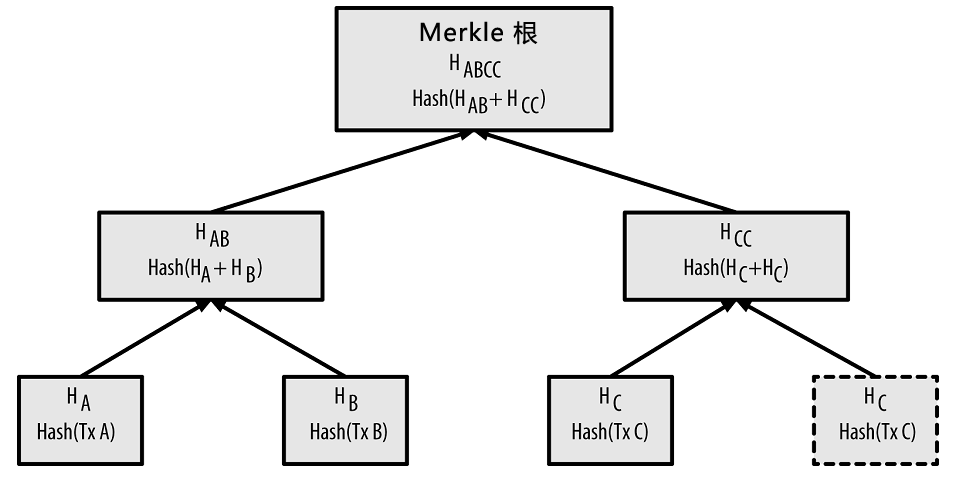
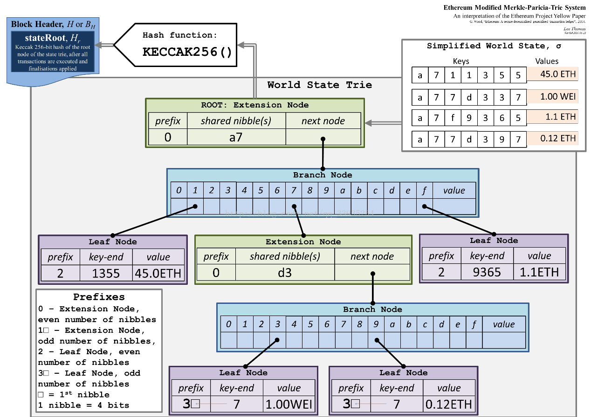

视图¶
账号¶
视图状态是执行器执行过程中读写的对象，常见的视图状态模型有UTXO及账户两种。在UTXO模型中，由UTXO构成账本视图，每个交易在销毁旧有UTXO的同时创造新的UTXO；在账户模型中，由账户构成世界状态视图，交易在处理过程中可以读写多个账户。 账户模型相对更加简单，实现通用任务更有效率。在企业级应用中往往存在身份验证与授权的需要，这些服务所依赖的数据可以自然的与账户模型关联。CITA默认支持账户模型。用户可以自定义包括UTXO在内的其他状态模型。
在CITA中存在两种账号：外部账号和合约账号。外部账号通常情况下代表用户的身份，用户可以通过外部账号来发送交易。与公链不同，CITA具有用户准入机制。首先用户自行生成私钥和公钥，私钥由用户妥善保存； 然后将公钥通过链外的方式提交给CITA系统中的KYC系统；通过申请之后，系统管理员将用户公钥通过操作账户管理合约，发送交易将用户加入CITA网络中。对于未准入的外部账户，无法向CITA发送交易。同时，CITA内置了基于角色的权限管理，系统管理员（角色）可以根据实际情况灵活配置账户的权限。
为了阻止重播攻击，每笔交易必须有nonce，这就使得账户需要跟踪nonce的使用情况。CITA中用户可以根据实际业务需求，自定义nonce防重放机制。现阶段CITA兼容了Ethereum的自增nonce的防重放机制。
总体来讲，外部账户具有以下特性：
- 外部账号需要准入机制；
- 通过私钥控制，可以发送交易；
- 同一账户可以支持多种签名；
- 支持用户自定义的交易放重放规则。
合约账户与外部账户最大的区别在于，合约账户通过交易进行创建，合约内部维护一定的代码，合约的执行和调用通过外部账户发送交易来进行。当前CITA支持EVM虚拟机，用户可以通过直接发送合约代码的方式来创建合约，也可以通过合约调用的方式来创建合约。
总体来讲，合约账户具有以下特性：
- 合约账号通过交易创建，并支持合约创建合约；
- 合约通过交易调用，并支持合约间互相调用；
- 合约具有图灵完备性，但是交易对计算资源的配额受系统合约控制；
- 合约维持自身的特定储存状态；
- CITA内置系统合约模块，在创始块中生成，方便用户对系统进行管理。
存储¶
区块链本质上去中心化的分布式复制状态机，每个节点通过持久化的方式来保存自身的状态。CITA使用KV持久化数据存储，支持RocksDB、LevelDB。节点将Block结构，交易以及合约状态等持久化保存到KV数据库中。
为了更高效的检索和更新数据，区块链一般会在内存中维护某种数据结构的视图模型。对于传统的区块链，如Bitcoin采用了Merkle Tree来保存交易；Ethereum采用了Merkle Patricia Tree，一种改进的Merkle Tree来保存状态和交易。 CITA采用了一种更高效的AVL来保存账户状态，并且采用了Simple Merkle Tree来保存交易列表和交易回执。下面我们将分别介绍这几种模型。
Merkle Tree¶
在Bitcoin中的每个区块都包含了产生于该区块的所有交易，且以Merkle树表示。Merkle树是一种哈希二叉树，它是一种用作快速归纳和校验大规模数据完整性的数据结构。这种二叉树包含加密哈希值。
在比特币网络中，Merkle树被用来归纳一个区块中的所有交易，同时生成整个交易集合的数字指纹，且提供了一种校验区块是否存在某交易的高效途径。生成一棵完整的Merkle树需要递归地对哈希节点对进行哈希，并将新生成的哈希节点插入到Merkle树中，直到只剩一个哈希节点，该节点就是Merkle树的根。
当N个数据元素经过加密后插入Merkle树时，你至多计算2*log2(N)次就能检查出任意某数据元素是否在该树中，这使得该数据结构非常高效。同时Merkle树可以很好的支持轻节点。
Merkle Patricia Trie¶
在Ethereum中，使用Trie来构建Merkle tree，即Merkle Patricia Trie。它是Ethereum中主要的数据结构，用来存储所有账号的状态以及交易和交易回执。MPT支持高效的检索及动态的插入、删除、修改，Ethereum将其命名为Merkle Patricia Tree（MPT），其示意图如下：
更多关于MPT的介绍可以参考Ethereum Patricia-Tree 。
Merkle AVL Tree¶
对于Ethereum中的MPT，由于Sha3运算的开销并不低。随着账户地址的增多，以及合约存储数据量的增多，Sha3计算的数据量也会增多。对于常见金融领域来讲，千万级数据将会导致MPT性能下降，Sha3的计算将有可能成为瓶颈。 为了提高效率，我们希望在每次更新树时能够计算Sha3的数据量最少。对于树形结构，更新一个节点所需要重新计算的Sha3数据量约为O(mlogmn)，其中 m 为分支数，故当 m=2 时，Sha3的计算量最小。 又因为AVL Tree的平衡性更好（尽管这意味着更多的旋转操作，幸运的是旋转操作并不增加Sha3计算），同时又能很好地保持MPT动态插入、删除、修改的特点。因此选用AVL Tree来构建Merkle Tree似乎是一个不错的选择，我们简称之为MAT。
更多关于AVL的介绍可以参考Wiki AVL_tree 。
Simple Merkle Tree¶
在Ethreum中，交易和交易回执同样采用MPT树来进行保存。而CITA中，区块中的交易在共识完成后就已经确认了。所以在Chain处理交易时，交易的顺序和交易结果的顺序都是确定不变的。 而MPT树优点是便于保存历史快照可维持可变性，对于静态数据可以采用Merkle树，而不必采用MPT和AVL这样的数据结构。而比特币的Merkle树在处理奇数节点时，需要拷贝节点，额外做一次Sha3计算。 CITA采用了简单的Merkle树来保存，对于奇数个节点情况，计算Sha3的次数会减少。
*
/ \
/ \
/ \
/ \
* *
/ \ / \
/ \ / \
/ \ / \
* * * h6
/ \ / \ / \
h0 h1 h2 h3 h4 h5